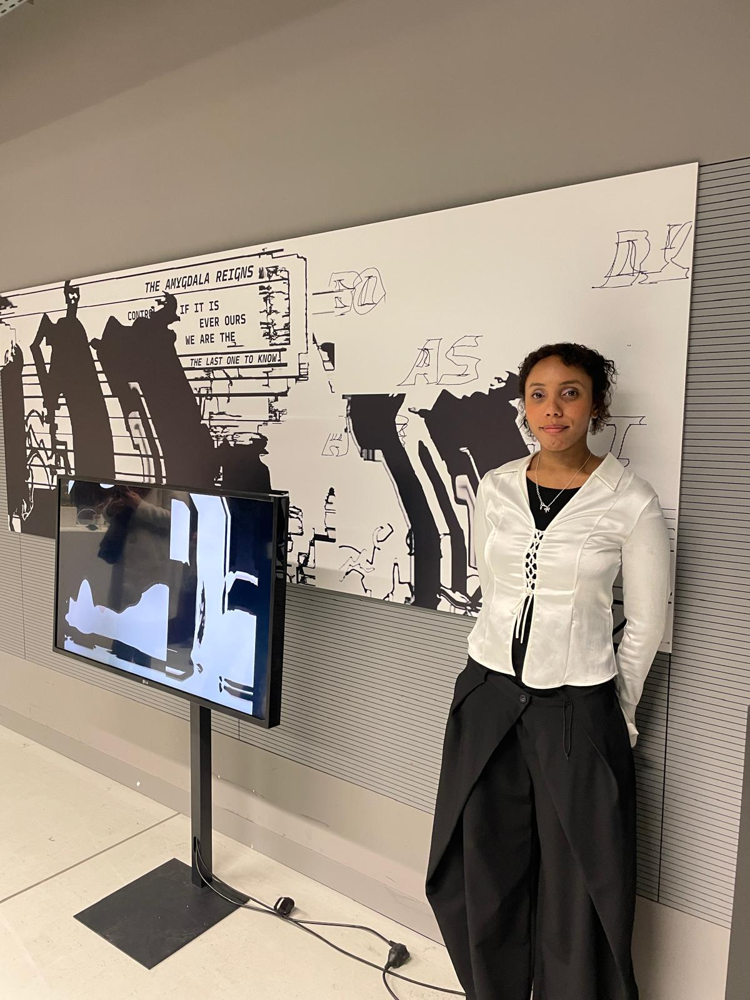
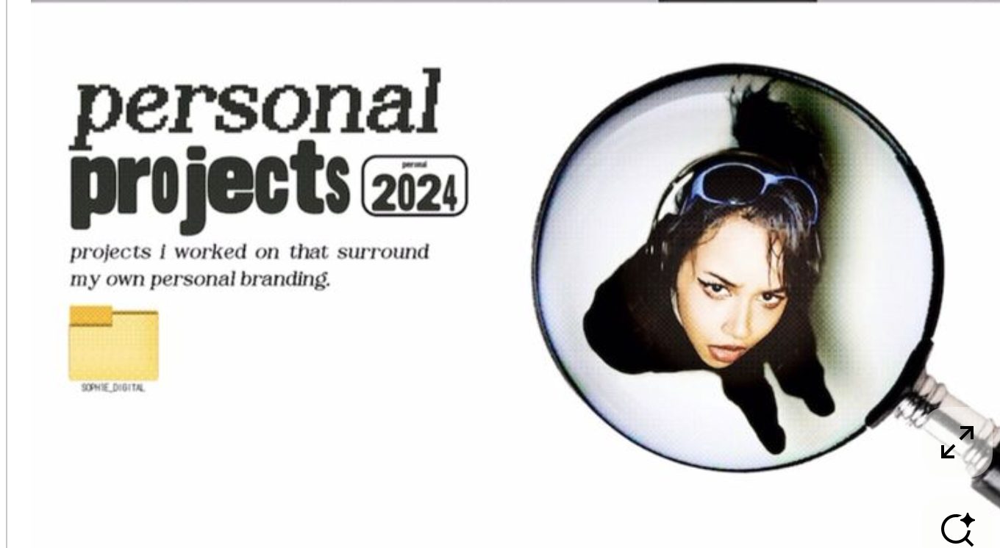

Languages
German (Native)
English (C1)
Spanish (Native)
Japanese N4-N3

About Mey
Mey Amisa is a Cuban-German experimental artist and designer based in Germany, specializing in experimental typography, visual storytelling, filmmaking, and immersive exhibition design. With a degree in Communication Design from the Peter Behrens School of Arts and a diverse cultural background enriched by her studies in Kyoto, Japan, Mey blends unique influences to create innovative, emotionally resonant work.
Her approach fuses graphic design, performance, interactive installations, and poetry to explore the deep connection between visual expression and human emotion. Having exhibited internationally in South Korea, Japan, and Germany, Mey's work challenges conventions and pushes the boundaries of design, storytelling, and filmmaking.
Driven by a passion for bridging cultures and creating meaningful experiences, Mey seeks opportunities to collaborate with like-minded creatives and contribute to groundbreaking projects that shape the future of design.
German (Native)
English (C1)
Spanish (Native)
Japanese N4-N3
Experimental typography, visual communication, and interactive installations.
Creative storytelling, book writing, screenwriting, and poetry.
Physical and digital installations, collaborative exhibitions.
27.09 - 11.02.2024
Japanese Studies Program
Exchange Semester
10.2020 - 01.2026
Peter Behrens School of Arts
B.A. of Arts Communication Design, GPA 4.0
01.10.2015 - 18.06.2018
Graduated as Media Designer
Fachabitur (High-School Diploma)
06.12.2025
North Rhine-Westphalia, Aachen, Germany
Deviations art collection display · Live painting performance
31.10 - 10.11.2025
Geoje-si Island, South Korea
Deviations art collection and Hanguk display · Live painting performance
11.09 - 14.09.2025
Changwon Exhibition and Convention Center, Changwon City, South Korea
Deviations artworks exhibited and offered for sale
06.12 - 11.12.2024
Kyoto-Umezu Gotocho, Japan
Deviations art collection and Kotoba to Suisai poems · Exhibition and performance design · Collaboration with Knysh Ksenya (Illustrator)
28.08 - 02.09.2024
Tokyo Kita-senju, Japan
Reflection — a duo exhibition · Book collaboration with Knysh Ksenya (Illustrator)
21.09 - 28.09.2023
Tokyo Kita-Senju, Japan
Tsukumo — solo exhibition about experimental typography
Personal Projects
A side look into Mey's ongoing personal branding and self-initiated experiments, threaded through editorial graphics, photography, and visual identity studies.
